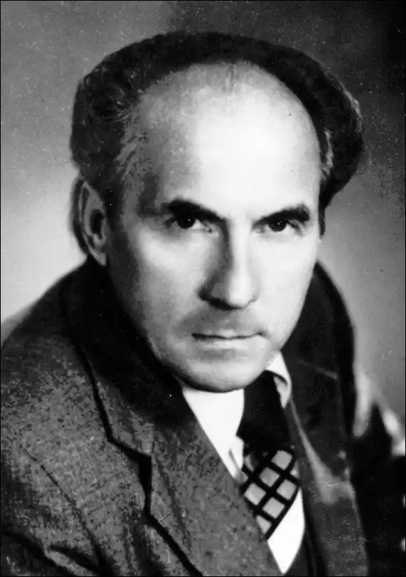

ІВАН ГНАТЮК
Гнатюк Іван Федорович народився 27 липня 1929р. в с. Дзвиняча Кременецького повіту Волинського воєводства (нині Збаразького району Тернопільської області) у бідняцькій селянській сім'ї. Батько клав печі по довколишніх селах, а мати ткала людям на замовлення полотно та рядна. Діти теж змалечку заробляли собі на прожиток власною працею.
Восени 1944р. батько майбутнього письменника був мобілізований до Радянського війська і в останній день Берлінської битви загинув, залишивши дружину з чотирма неповнолітніми дітьми. Ставши напівсиротою, І. Гнатюк по закінченні сільської школи поступив до Кременецького педагогічного училища, але на початку другого курсу навчання був раптово заарештований. По дорозі до в'язниці він утік і невдовзі подав документи в Бродівське педучилище, що на Львівщині. Проте й там не пощастило йому пробитися "в люди". 27 грудня 1948p. його знову було заарештовано і після чотиримісячного слідства засуджено за зв'язок з Організацією українських націоналістів на 25 років неволі з відбуванням покарання в спецтабоpax так званого Берлагу на Колимі. Першим концтабором, де йому було призначено каратися, стала зловісно знаменита Аркагала, в якій за десять років перед тим сконав відомий український поет Михайло Драй-Хмара. Маючи непокірну вдачу Іван Гнатюк не міг довго протриматися на одному місці: табірна адміністрація намагалася чимскоріш позбутися такого в'язня. За сім років, прожитих на Колимі, йому довелося побувати у багатьох концтабоpax: в Аляскітово, Дебіні, де містилася центральна колимська лікарня для зеків, на Холодному, Дніпропетровському, імені Бєлова та імені Матросова, з якого 6 лютого 1956р. він був звільнений "на основании определения Магаданского облсуда от 10 ноября 1955г. как страдающий тяжелым недугом". Політичних в'язнів, звільнених із-за грат за станом здоров'я, випускали на волю лише за умови, що хтось із рідних через союзне Міністерство внутрішніх справ давав письмову згоду взяти приреченого на своє утримання як інваліда і доглядати до самої смерті. Таку довідку-згоду дала Іванові Гнатюку його майбутня дружина, з якою він після її звільнення з концтабора випадково познайомився у 1954 році. Одначе, коли І. Гнатюк приїхав до Борислава, де вона мешкала, органи Держбезпеки буквально вигнали його за межі Західної України, мотивуючи своє рішення тим, що в сусідній Угорщині неспокійно (це ж був 1956 рік!). Два роки поневіряння в несприятливих для хворих на сухоти південних степах, куди І. Гнатюк переїхав до своєї матері, злидні та моральне пригнічення не могли не позначитися на його здоров'ї. Побачивши очевидну приреченість вчорашнього політв'язня, підтверджену головним лікарем Миколаївської обласної тублікарні, органи Держбезпеки дозволили йому повернутися з дружиною та двома немовлятами до Борислава. Та Іван Гнатюк вмирати не квапився. Навпаки: важко хворий, він, як і в сталінських концтаборах на Колимі, де потай писав "захалявні" вірші, знову береться за перо. І творчість додає йому сил боротися із важкою недугою. Тим паче коли його вірші стали з'являтися на шпальтах газет та журналів. Проте друга книжка "Калина" (1966) принесла авторові більше лиха, ніж радощів. На одному із засідань ЦК комсомолу України вона була визнана націоналістичною, і це, безумовно, позначилося на подальшій долі її автора. Коли ж І. Гнатюка того року було прийнято до Спілки письменників, тодішній секретар Львівського обкому партії Маланчук на зібранні письменників-комуністів заявив, що не простить їм того, що вони "контрабандою прийняли націоналіста до Спілки". Звичайно, Іван Гнатюк зразу потрапив у неласку власть імущих чиновників од літератури і лише завдяки своїй наполегливості заявляв про себе то публікацією віршів у періодиці, то невеличкою книжечкою, як правило, немилосердно кастрованою цензорами різних мастей. За два з половиною десятки років він видав (разом із трьома перевиданнями) п'ятнадцять збірок поезій, які були замовчані критикою. Останніми роками українські художньо-літературні журнали та письменницька газета стали щедро друкувати його вірші, писані в колимських концтаборах. 1990р. вони видані окремою книжкою — "Нове літочислення". За час творчості з-під його пера, крім вищезгаданих, вийшли такі збірки поезій: "Повнява" (1968), "Жага" (1970), "Життя" (1972), "Барельєфи пам'яті" (1977), вибране "Дорога" (1979), "Чорнозем" (1981), "Турбота" (1983), "Осіння блискавка" (1986), "Благословенний світ" (1987) та книжечка для дітей "Хто найдужчий на весь світ" (1989).